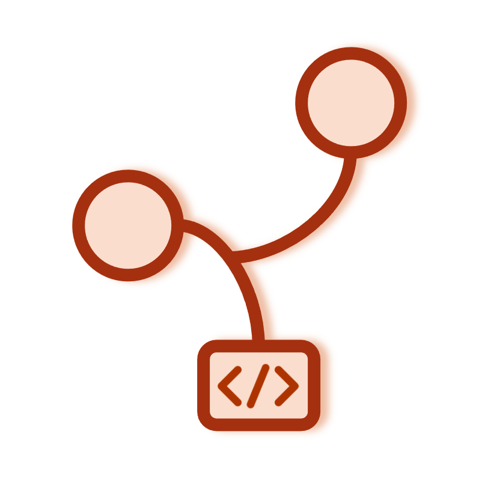
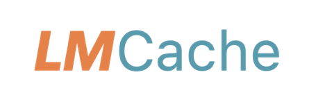
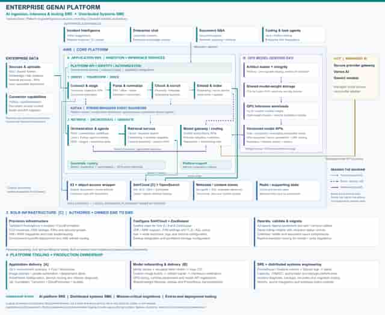

THE PROBLEM
Enterprise GenAI platform
Enterprise teams needed a shared platform for document Q&A, enterprise chat, incident intelligence and coding-agent workflows. These experiences depended on more than a model endpoint: documents had to be ingested, transformed and indexed; retrieval had to remain responsive; and model deployments needed repeatable artifact and runtime configuration. Different workloads also placed different demands on CPU, storage and GPU capacity.
What I owned
I owned GPU Kubernetes platform engineering, model-weight serving and onboarding tooling, Solr infrastructure and performance engineering, and Mac document-conversion infrastructure. I co-owned the wider enterprise AI platform with the team, including ingestion/inference GitOps onboarding and observability. Elasticsearch and Milvus were shared ownership.
- Owned GPU Kubernetes platform build, lifecycle, tooling, capacity planning and production operations on AWS EKS, including upgrades, patching and incident response. Operated NVIDIA V100, A10G, L40S and A100 infrastructure.
- Operated NVIDIA GPU Operator, Karpenter and cluster networking across environments, including Calico/Cilium. Connected GPU workload placement and cluster lifecycle decisions to model-serving requirements.
- Designed and built model-weight serving and onboarding tooling: Helm/Argo CD, vLLM, S3-to-FSx staging, checksum validation and read-only mounts. Worked with tensor parallelism, GPU memory sizing, context limits and LoRA configuration.
- Owned Solr infrastructure, performance, IaC and lifecycle tooling at approximately 200-node, multi-region scale. Supported 15,000+ embedding collections across five clusters in one region; co-owned Elasticsearch and Milvus.
- Developed Go model-checksum and Kafka topic/user resource-generation tools. Built a TypeScript CLI to validate GPU allocation, tensor parallelism, model paths, storage mounts and startup probes before deployment.
- Operated DCGM GPU monitoring with Prometheus/Grafana and co-owned wider observability. Led investigations across deployment readiness, storage/PVC failures, networking, queues and p95/p99 latency; coordinated root-cause analysis and corrective actions.
- Coordinated US/APAC engineers, guided migrations and mentored teammates. Worked directly with customer leaders on incoming workloads, capacity and service constraints; partnered with developers on application GitOps onboarding.
- Owned Mac conversion infrastructure, IaC and tooling; productionized EC2 Mac conversion with application developers.
GPU KUBERNETES OWNERSHIP
Owned build, lifecycle, tooling, capacity planning and production operations.
MODEL DELIVERY AND SERVING
Personally built onboarding, staging and validation tooling; vLLM deployment configuration.
SEARCH AND VECTOR INFRASTRUCTURE
Owned Solr; co-owned Elasticsearch and Milvus: provisioning, tuning, tooling and IaC.
PRODUCTION RELIABILITY
GPU Operator, Karpenter, networking and DCGM; incidents and customer workload planning.
MODEL SERVING / PLATFORM SCOPE
Models behind the serving platform.
General-purpose, reasoning, coding and vision/multimodal workloads, including Apple foundation models, Qwen, Mixtral and Pixtral.
AWS infrastructure and GCP Vertex AI platform engineering; production PostgreSQL experience across Apple, Freddie Mac and Cloudwick.
Model families describe serving-platform experience, not model-training or inference-engine authorship. Deeper inference optimization is an ongoing learning focus.
KUBERNETES / GPU & APPLICATION PLATFORMS
The Kubernetes foundation behind AI serving.
At Apple, I owned the GPU Kubernetes foundation on EKS: cluster build, lifecycle, tooling, capacity planning and production incidents. I also co-owned the application platform around it, partnering with developers on ingestion and inference GitOps onboarding.
 Kubernetes / EKS
Kubernetes / EKS- GPU Operator
- Karpenter
- Calico / Cilium
- DCGM
- Helm
- Argo CD
- Prometheus
- Grafana
- 01
Build and evolve
Application services and GPU model hosting ran in separate Kubernetes environments. I owned GPU cluster build and lifecycle, while co-owning the wider application platform. Node upgrades and patching had to account for model reload time and serving availability.
- 02
Onboard and release
I personally built model-onboarding tooling to stage weights from S3 to FSx, validate checksums and mount artifacts read-only. Helm/Argo CD delivered model workloads; Flux/Kustomize supported application GitOps onboarding.
- 03
Plan capacity and connectivity
I operated Karpenter and GPU Operator and planned capacity against model placement and customer workloads. Calico and Cilium appeared in different cluster generations; networking, DNS and storage had to be ready before a serving endpoint was useful.
- 04
Observe and recover
DCGM GPU metrics, Prometheus/Grafana, network captures, p95/p99 latency and queue/storage signals supported investigation. I led production recovery and coordinated root-cause analysis and corrective actions.
Deployment and GitOps
Flux · Helm · Kustomize · Argo CD
GPU enablement and capacity
NVIDIA GPU Operator · Karpenter · managed node groups; KEDA, HPA and Prometheus Adapter supported workload-specific scaling.
Networking and service connectivity
Calico in older configurations; Cilium hybrid mode in newer environments. Wider platform components included AWS VPC CNI, NGINX ingress and Istio.
GPU and platform observability
DCGM exporter · Prometheus Operator · Grafana · Kubernetes metrics and alerting · Splunk OpenTelemetry integration
Security and persistent storage
cert-manager · Kubernetes RBAC · NetworkPolicy · FSx for Lustre model storage · PVCs and CSI integrations; Gatekeeper and EFS/EBS CSI appeared in wider platform configurations.
Distributed serving support
LeaderWorkerSet model-serving templates, Ray head/worker startup and KubeRay deployment configuration in adjacent infrastructure.
I owned GPU platform engineering within a team-built AI platform. Tools varied by environment and cluster generation; this is a view of the operational ecosystem, not one identical installation everywhere.
INFERENCE ENGINEERING / PRODUCTION FOUNDATION + ACTIVE LEARNING
Production serving experience. Deeper inference engineering.
My foundation is hands-on production serving infrastructure. At Apple, I owned GPU Kubernetes engineering and personally built model-weight onboarding and serving tooling. I worked with vLLM runtime configuration, GPU memory sizing, tensor parallelism, context limits, LoRA and deployment readiness.
I’m now deepening my understanding of inference internals through structured study and practical exercises: prefill and decode, KV-cache behavior, scheduling, and reproducible latency and throughput measurement.
PRODUCTION FOUNDATION
What I bring from Apple
- GPU Kubernetes build, lifecycle and production operations
- Personally built artifact staging, checksum validation and deployment tooling
- vLLM runtime configuration, tensor parallelism and serving readiness
- DCGM monitoring, capacity planning and production incident response
ACTIVE LEARNING
Where I’m going deeper
- Prefill/decode and KV-cache behavior
- Serving performance and reproducible benchmarking
- Next tools to explore: GenAI-Perf, SGLang and LMCache
I bring immediate ownership of serving-platform infrastructure, tooling, capacity planning and production troubleshooting. I am building on that experience to take on deeper inference-performance work, with the same habit of investigating across system boundaries.
- vLLM
- NVIDIA GPUs
- Kubernetes
- S3 / FSx weight staging
- GenAI-Perf

SGLang
LMCache
Production experience covers the serving platform and its tooling. Advanced inference optimization, kernel-level work and new benchmarking tools remain separate learning areas.
SYSTEM DESIGN
Follow the architecture.
- 01
Ingest enterprise knowledge
Connectors and upload services stage source objects through an S3-backed access layer. Parsing, chunking and embedding services turn content into retrievable representations.
- 02
Retrieve and orchestrate
Search/vector services access Solr and OpenSearch indexes. Orchestration and agent services assemble context and invoke models through a routing layer. Kafka supports platform events and configuration dependencies.
- 03
Serve models across two paths
Self-hosted models run on a separate GPU EKS environment; a provider gateway reaches Vertex AI/Gemini. The model tooling stages weights to FSx for Lustre, validates checksums and mounts weights read-only for serving.
- 04
Own the distributed foundation
SolrCloud runs on EC2/EBS with ZooKeeper. Ansible-driven CloudFormation, Terraform foundations and Python utilities support provisioning, runtime configuration and lifecycle operations.
ENGINEERING JUDGMENT
The decisions behind the boxes.
Separate application and model infrastructure
The architecture separates the ingestion/inference services from GPU model hosting. This lets application and model deployments have distinct capacity and runtime configurations.
Make model artifacts part of deployment
Weight staging, integrity checks, shared volumes, health probes and runtime values are first-class deployment steps. Configuration covers precision, context limits, memory budgets, tensor parallelism and LoRA serving.
Treat retrieval as a systems problem
I worked across JVM/GC, OS settings, cache behavior, query patterns and indexes. The reported latency improvement is a vector-query result, not an LLM generation benchmark.
DELIVERY & OPERATIONS
What changed.
- Supported 15,000+ project-embedding collections across five Solr clusters in one region, with at least 90% active; owned Solr infrastructure at approximately 200-node, multi-region scale.
- Reduced vector-query latency from approximately 7.0 seconds to 1.9 seconds through JVM/GC, operating-system, cache, query and index tuning.
- Migrated 200 Solr nodes to Graviton/ARM64 while preserving query throughput, reducing cost 19.8% ($266K+ annualized).
- Production configurations specified 226 application-cluster workers across two AWS regions and 105 West-region document-processing replicas for parsing, chunking and PDF conversion. These are configured desired counts, not a live fleet inventory.
- Delivered $500K+ in combined Solr and Mac infrastructure savings. Component rates: $266K+ annualized from Solr and approximately $16K/month from EC2 Mac document conversion. The combined figure is not stated as an annual total.
The operating story
I followed production failures across model artifacts, serving workloads, Kubernetes, storage and network dependencies. When incomplete model staging blocked checksum validation and serving readiness, I restored validated artifacts and made successful staging and validation a deployment prerequisite. I also diagnosed embedding-service timeouts caused by worker conntrack exhaustion, addressing connection pooling, bounded concurrency and conntrack sizing. DCGM GPU telemetry, Prometheus/Grafana, PCAP and application latency helped connect infrastructure behavior to user impact.
ORIGINAL DIAGRAMS
A glimpse of the original diagrams.

LOW-RESOLUTION PORTFOLIO PREVIEWEnterprise GenAI platform
The supplied portfolio architecture PDF, including Solr ownership. This is the recent reconstructed overview, not a historical production drawing.
LET’S GO DEEPER
Good starting points for a conversation.
- How did you build and operate the GPU Kubernetes foundation?
- How did you stage and validate model weights before serving?
- How did you connect GPU capacity, model configuration and production reliability?
- How did you diagnose the vector-query performance problem?
Scope and attribution. Sanitized logical architecture, with personal and team ownership distinguished. Configured worker and replica counts describe desired configuration rather than a live fleet inventory. Model names describe platform serving scope, not training ownership. Latency figures refer to vector queries; no LLM throughput, TTFT or GPU-utilization improvement is claimed.
Next case studyCyber telemetry & distributed ingestion →